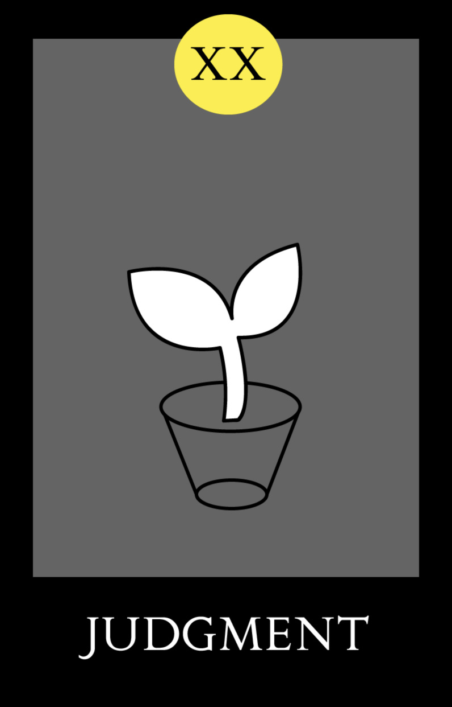
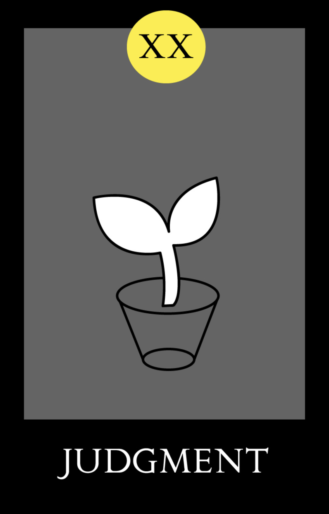
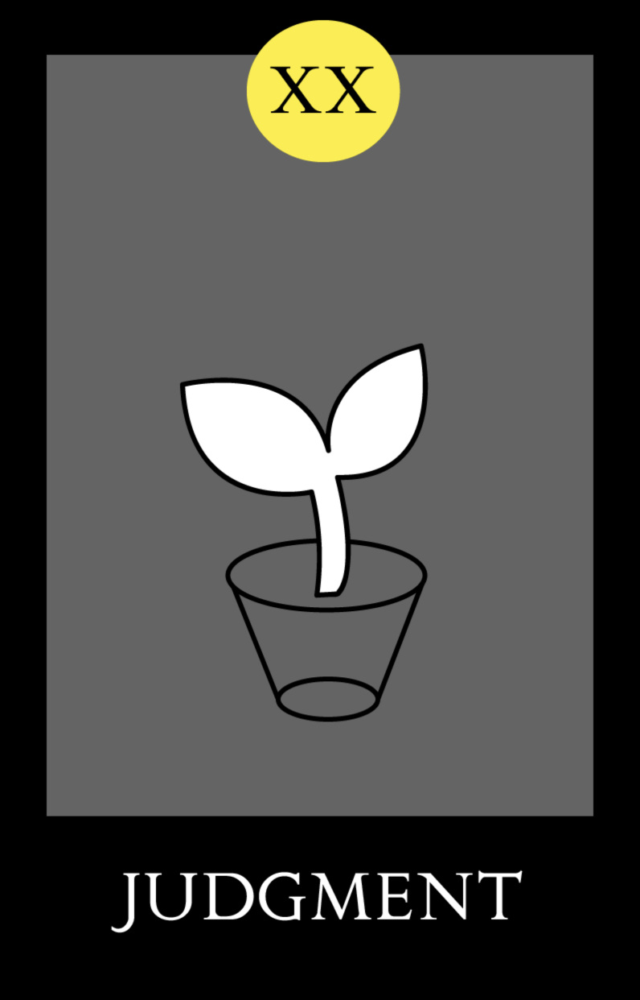

Judgment tells a story of transition, but unlike Death or the Tower, it is not sudden change, or born of luck or intuition, but change that springs from reason. It signifies plans, often long in the making, coming to fruition. If it points towards the future, it may also speak towards the nature of the change; if there is a choice that needs to be made, ruminate and let your mind guide the decision. Logic, in this case, is a better guide than intuition. Be prepared to make a major decision in your life, likely one that will shape the next chapter of your life.

Description from trustedtarot.com